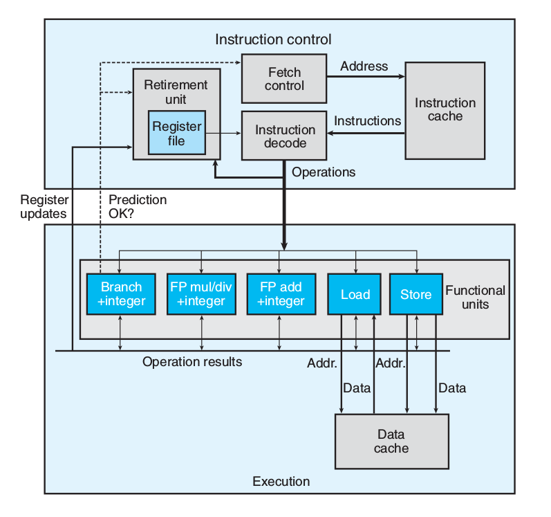
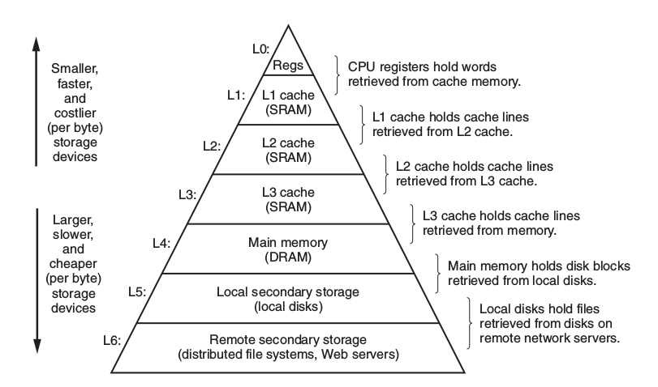
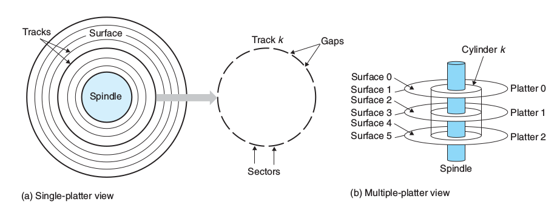
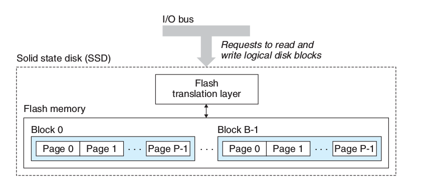
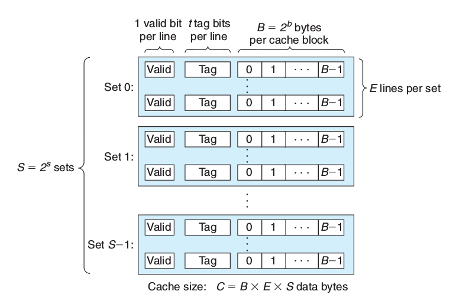
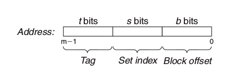
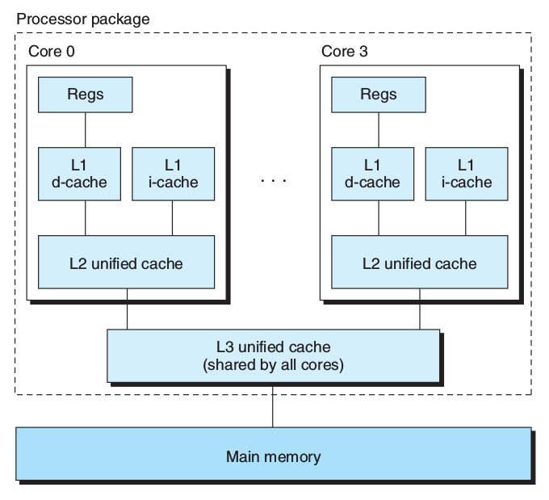

Operating Systems
Table of Contents
1 Represeting Infomation
1.1 Integer
1.1.1 Integer Limits
\[TMax_w = 2^{w-1}-1\quad TMin_w = - 2^{w-1}\quad UMax_w = 2^w-1\quad UMin_w = 0\]
1.1.2 Binary2Integer
\[B2U_w(\overrightarrow{x})\doteq\sum_{i=0}^{w-1}x_i2^i\]
1.1.3 Transform between signed and unsigned
- \(T2U_w(x)\)
\[B2U_w(\overrightarrow{x})-B2T_w(\overrightarrow{x})=x_{w-1}(2^{w-1}+2^{w-1})=x_{w-1}2^w\] \[B2U_w(\overrightarrow{x})=x_{w-1}2^w + B2T_w(\overrightarrow{x})\] Let \(\overrightarrow{x}=T2B_w(x)\) , Then： \[T2U_w(x)=B2U_w(T2B_w(x)) = x_{w-1}2^w + B2T_w(T2B_w(x)) = x_{w-1}2^w + x\] bit \(x_{w-1}\) is the sign bit, giving: \[T2U_w(x) = \begin{cases} x+2^w, & x\le 0 \\ x, & x>0 \\ \end{cases}\]
- \(U2T_w(x)\)
\[U2T_w(u)=B2T_w(U2B_w(u))=-u_{w-1}2^w+u\] \[U2T_w(u) = \begin{cases} u, & u<2^{w-1} \\ u - 2^w, & u\ge2^{w-1} \\ \end{cases}\]
1.1.4 Small size to big size
- Change the size(fill 0 or 1 depends on signed/unsigned)
- Convert signed/unsigned
1.1.5 Big size to small size
- Unsigned big2small：\(B2U_k([x_{k-1},x_{k-2},\cdots,x_0])=B2U_w([x_{w-1},x_{w-2},\cdots,x_0])\mod 2^k\)
- Signed big2small：\(B2T_k([x_{k-1}, x_{k-2}, \cdots, x_0])=U2T_k(B2U_k([x_{k-1},x_{k-2},\cdots,x_0])\)
1.2 Floating Point
1.2.1 Fractional Binary Numbers
- Fractional Decimal
\[d=\sum_{i=-n}^m10^i\times{d_i}\] Consider Fractional decimal \(12.34_{10}\) \[ 1\times{10^1} + 2\times{10^0} + 3\times{10^{-1}} + 4\times{10^{-2}}=12\frac{34}{100}\]
- Fractional Binary
\[b=\sum_{i=-n}^m2^i\times{b_i}\] eg: \(101.11_2\) \[ 1\times{2^2} + 0\times{2^1} + 1\times{2^0} + 1\times{2^{-1}} + 1\times{2^{-2}} = 5\frac{3}{4}\]
1.2.2 IEEE Floating-Point
\[V=(-1)^{s}\times{M}\times{2^E}\]
- sign s: negative(s=1) positive(s=0), Sign-Magnitude
- significand M: a fractional binary number, n bits
- exponent E: weights the value by a power of 2, k bits
- \(Bias = 2^{k-1} -1\)
- float(single-precision)
s=1, k=8, n=23 yielding a 32-bit representation, Bias = 127
- double(double-precision)
s=1, k=11, n=52, yielding a 64-bit representation, Bias = 1023
- Nomalized Values
Condition: exp is not all zeros(0) & not all ones(255 for single, 2047 for double)
s exp neither all 1 nor all 0 frac \(E = e - Bias\), e is the unsigned number, Hance, the range of \(E\) is
- \(-126\leq{E}\leq{+127}\) for single
- \(-1022\leq{E}\leq{+1023}\) for double
\(M=1+f\) where \(0\leq{f}<1\) having binary representation \(0.f_{n-1}...f_1f_0\) so that, M is in the range \(1\leq{M}<2\) This implied leading 1 is a trick for getting an additional bit of precision for free.
- Denormalized Values
Condition: exp is all zeros
s all 0 frac Serve two purposes:
- represent 0 (all bits are zero)
- represent numbers that are very close to 0.0
- Spacial Values
Condition: exp is all ones
infinity
s all 1 0 NaN
s all 1 \(\ne 0\)
- Examples
8-bit floating-point format
Description bits e E \(2^E\) f M \(2^E\times{M}\) V Decimal Zero 0 0000 000 0 -6 \(\frac{1}{64}\) \(\frac{0}{8}\) \(\frac{0}{8}\) \(\frac{0}{512}\) 0 0.0 Smallest pos. 0 0000 001 0 -6 \(\frac{1}{64}\) \(\frac{1}{8}\) \(\frac{1}{8}\) \(\frac{1}{512}\) \(\frac{1}{512}\) 0.001953 Largest denorm. 0 0000 111 0 -6 \(\frac{1}{64}\) \(\frac{7}{8}\) \(\frac{7}{8}\) \(\frac{7}{512}\) \(\frac{7}{512}\) 0.005859 Smallest norm. 0 0001 000 1 -6 \(\frac{1}{64}\) \(\frac{0}{8}\) \(\frac{8}{8}\) \(\frac{8}{512}\) \(\frac{1}{64}\) 0.013672 One 0 0111 000 7 0 1 \(\frac{0}{8}\) \(\frac{8}{8}\) \(\frac{8}{8}\) 1 1.0 Largest norm. 0 1110 111 14 7 128 \(\frac{7}{8}\) \(\frac{15}{8}\) \(\frac{1920}{8}\) 240 240.0 Infinity 0 1111 000 - - - - - - \(\infty\) -
2 Manipulating Infomation
2.1 Integer arithmatic
2.1.1 Unsigned Addition
\[ x+^u_wy= \left\{ \begin{array}{l l} x+y & \quad x+y<2^w\\ x+y-2^w & \quad 2^w\le x+y<2^{w-1} \end{array} \right.\] Same as \(x+^u_wy=(x+y) \mod 2^w\)
When overflow occured, \(sum=x+y-2^w\)
Because \(y < 2^w\)
We have \(sum = x +(y-2^w) < x\)
sum < x means it did overflow.
2.1.2 Unsigned Negation
\[ -^u_wx= \left\{ \begin{array}{l l} x & \quad x=0\\ 2^w-x & \quad x>0 \end{array} \right.\]
2.1.3 Two's Complement Addition
- from signed operand to unsigned
- excute unsigned addition(truncate the overflow)
\[x+^t_wy\doteq U2T_w(T2U_w(x)+^u_wT2U_w(y))\] \[=U2T_w[(x_{w-1}2^w+x+y_{w-1}2^w+y) \mod 2^w]\] \[ x+^t_wy= \left\{ \begin{array}{l l} x+y-2^w & \qquad x+y\ge 2^{w-1} \quad Positive \ overflow\\ x+y & \qquad -2^{w-1}\le x+y<2^{w-1} \quad Normal\\ x+y+2^w & \qquad x+y<-2^{w-1} \quad Negative \ overflow \end{array} \right.\] Example:
| \(x\) | \(y\) | \(x+y\) | \(x+^t_4y\) |
|---|---|---|---|
| -8(1000) | -5(1011) | -13(10011) | 3(0011) |
2.1.4 Two's Complement Negation
\[ -^t_wx= \left\{ \begin{array}{l l} -2^{w-1} & \qquad x=-2^{w-1} \\ -x & \qquad x>-2^{w-1} \\ \end{array} \right.\] Two Clever Ways:
2.1.5 Unsigned Mutliplication
\(0\le x,y\le 2^{w}-1\) Hence, \[0\le x\cdot y\le2^{2w}-2^{w+1}+1\] This could require as many as 2w bits to represent. \[ x \times ^u_wy=(x\cdot y)\ mod\ 2^w\]
2.1.6 Two's Complement Multiplication
\(-2^{w-1}\le x,y \le 2^{w-1}-1\) Hence, \[ -2^{2w-2}+2^{w-1} \le x\cdot y \le 2^{2w-2}\] Also need 2w bits to represent. \[ x \times ^t_wy = U2T_w((x\cdot y)\ mod\ 2^w) \]
2.1.7 Reduce Mutiplication by shift and addition
Motivation Mutiplication requires 10 or more clock cycles. shift and addition requires 1 clock cycle. \[ x \times ^t_w2^k = x << k\]
- two forms:
\[(x << n) + (x << n-1) + \dots + (x << m)\] \[(x << n+1) - (x << m)\]
- eg: \(14\) can be rewrite as \((x<<4) - (x<<1)\) or \((x<<3) + (x<<2) + (x<<1)\)
Assuming additions and subtractions have comparable cost, then we have:
- \(n = m\) , use Form1.
- \(n = m+1\) , use either Form1 or Form2.
- \(n > m+1\) , use Form2.
2.1.8 Reduce Division by shift
Division require 30 or more clock cycles.
2.2 Floating Operation
2.2.1 Round
- Round-to-even eg: 1.5 approximate 2, 2.5 approximate 2 (DEFAULT) avoid statistical bias
- Round-toward-zero eg:-1.5 approximate -1, 1.5 approximate 1
- Round-down eg: 1.5 approximate 1
- Round-up eg: 1.5 approximate 2
2.2.2 Arithmatic Operation
\[x+^fy=Round(x+y)\]
- Compute \(x+y\) first, then round
3 Program Structure
3.1 Processor State
3.1.1 program counter(%eip)
Indicates the address in memory of the next instruction to be executed
3.1.2 integer register
Contain eight named locations storing 32-bit values
3.1.3 condition code register
Hold status information about the most recently executed arithmetic or logical instruction
3.1.4 floating-point register
Store floating-point data
3.2 Asm
gcc -Og -S xxx.c # c -> asm objdump -d xxx.o # obj -> asm: disassemble
3.3 Data Formats
| C declaration | Intel | Assembly code suffix | Size(bytes) |
|---|---|---|---|
| char | Byte | b | 1 |
| short | Word | w | 2 |
| int | Double word | l | 4 |
| long | Quad word | q | 8 |
| char * | Quad word | q | 8 |
| float | Single precision | s | 4 |
| double | Double precision | l | 8 |
3.4 Interger Registers
| 63-32 | 31-16 | 15—8 | 7—0 | use |
|---|---|---|---|---|
| %rax | %eax | %ax | %al | return value |
| %rbx | %ebx | %bx | %bl | callee reserved |
| %rcx | %ecx | %cx | %cl | 4th argument |
| %rdx | %edx | %dx | %dl | 3th argument |
| %rsi | %esi | %si | %sil | 2nd argument |
| %rdi | %edi | %di | %dil | 1st argument |
| %rbp | %ebp | %bp | %bpl | callee reserved |
| %rsp | %esp | %sp | %spl | stack pointer |
| %r8 | %r8d | %r8w | %r8b | 5th argument |
| %r9 | … | … | … | 6th argument |
| %r10 | … | … | … | caller reserved |
| %r11 | … | … | … | caller reserved |
| %r12 | … | … | … | callee reserved |
| %r13 | … | … | … | callee reserved |
| %r14 | … | … | … | callee reserved |
| %r15 | … | … | … | callee reserved |
3.5 Operand Specifiers
3.5.1 Access from three sources
- immediate: for constant values
- register: denotes the contents of one of the registers. \(R[E_a]\)
- memory: memory location. \(M[Addr]\)
| Form | Operand Value | Access way |
|---|---|---|
| \(\$Imm\) | \(Imm\) | Immediate |
| \(r_a\) | \(R[r_a]\) | Register |
| \(Imm\) | \(M[Imm]\) | Absolute |
| \((r_a)\) | \(M[R[r_a]]\) | Indirect |
| \(Imm(r_b)\) | \(M[Imm+R[r_b]]\) | Base + displacement |
| \((r_b,r_i)\) | \(M[R[r_b]+R[r_i]]\) | Indexed |
| \(Imm(r_b,r_i)\) | \(M[Imm+R[r_b]+R[r_i]]\) | Indexed |
| \((,r_i,s)\) | \(M[R[r_i]\cdot s]\) | Scaled Indexed |
| \(Imm(,r_i,s)\) | \(M[Imm+R[r_i]\cdot s]\) | Scaled Indexed |
| \((r_b, r_i, s)\) | \(M[R[r_b]+R[r_i]\cdot s]\) | Scaled Indexed |
| \(Imm(r_b, r_i, s)\) | \(M[Imm+R[r_b]+R[r_i]\cdot s]\) | Scaled Indexed |
3.6 Basic Operations
3.6.1 Data Movement
| MOV S,D | D ← S |
|---|---|
| movb | byte |
| movw | word |
| movl | double word |
| movq | quad word |
| movabsq | abs quad word |
- small src \(\to\) large dest
ZeroExtend
MOVZ S, R R← ZeroExtend(S) eg: movzbl, movzbw, movzwl, movzbq, movzwq
SignExtend
MOVS S, R R← SignExtend(S) eg: movsbw, movsbl, movswl, movsbq, movswq, movslq, cltq
- cltq: %rax \(\leftarrow\) SignExtend(%eax)
- push onto the program stack
pushq S
- R[%rsp] \(\leftarrow\) R[%rsp] - 8
- M[R[%rsp]] \(\leftarrow\) S
subq $8,%rsp // Decrement stack pointer movq %rbp,(%rsp) //Store %rbp on stack
- pop from the program stack
popq D
- D \(\leftarrow\) M[R[%rsp]]
- R[%rsp] \(\leftarrow\) R[%rsp + 8]
movq (%rsp),%rax //Read %rax from stack addl $4,%esp //Increment stack pointer
3.6.2 Arithmetic & Logical Operations
- unary operations
leaq S,D D <- &S inc D D <- D+1 dec D D <- D-1 neg D D <- -D not D D <- ~D(complement) - binary operations
binary op second operand: src & dest add S,D D <- D+S sub S,D D <- D-S imul S,D D <- D*S xor S,D D <- D^S or S,D D <- D|S and S,D D <- D&S - shift operations
sal k,D D <- D<<k shl k,D D <- D<<k(same as sal) sar k,D D <- D>>k(arithmetic shift) shr k,D D <- D>>k(logical shift)
3.6.3 Special Arithmetic Operations
imul also support one-operand operaion.
| imulq S | R[%edx]:R[%eax] <- S*R[%eax] (Signed) |
| mulq S | R[%edx]:R[%eax] <- S*R[%eax] (Unsigned) |
| clto | R[%edx]:R[%eax] <- SignExtend(R[%eax]) (-> 16 bytes) |
| idivq S | R[%edx] <- R[%edx]:R[%eax] mod S;(Signed) |
| R[%eax] <- R[%edx]:R[%eax] / S;(Signed) | |
| divq S | like idivq S (Unsigned) |
3.7 Control
3.7.1 Condiction Register
- condiction flags
CF carry flag ZF zero flag SF sign flag(neg number) OF overflow flag Example: For t=a+b,
CF (unsigned)t < (unsigned)a Unsigned Overflow ZF (t == 0) Zero SF (t < 0) Negative OF (a<0 = b<0)&&(t<0 !a<0)Signed Overflow
- CMP & TEST instructions
These two instructions that set the condiction code without updating their destination.
cmp \(S_1,S_2\) \(S_2-S_1\) cmpb, cmpw, cmpl, cmpq test \(S_1,S_2\) \(S_1\) & \(S_2\) testb, testw, testl, testq
3.7.2 Accessing the Condition Codes
There are three common ways of using the condition codes.
- SET Instruntions
set directly
Instruction Synonym Effect Set condition sete D setz D <- ZF Equal/zero setne D setnz D <- ~ZF Not Equal/not zero sets D D <- SF Negative setns D D <- ~SF Nonnegative signed group
setg D setnle D <- ~(SF^OF) & ~ZF > setge D setnl D <- ~(SF^OF) >= setl D setnge D <- SF^OF < setle D setnge D <- (SF^OF) | ZF <= unsigned group
seta D setnbe D <- ~CF & ~ZF > setae D setnb D <- ~CF >= setb D setnae D <- CF < setbe D setna D <- CF | ZF <=
- JUMP instructions
jump
Instruction Synonym Condition jmp Label direct jump 1 jmp *Operand indirect jump 1 je L jz ZF jne L jnz ~ZF js L SF jns L ~SF signed group
jg L jnle ~(SF^OF)&~ZF > jge L jnl ~(SF^OF) >= jl L jnge SF^OF < jle L jng (SF^OF)|ZF <= unsigned group
ja L jnbe ~CF & ~ZF > jae L jnb ~CF >= jb L jnae CF < jbe L jna CF|ZF <=
- conditional MOVE instructions
Instruction Synonym Condition cmove S, R cmovz ZF cmovne cmovnz ~ZF cmovs SF cmovns ~SF cmovg cmovnle ~(SF^OF)&~ZF cmovge cmovnl ~(SF^OF) cmovl cmovnge SF^OF cmovle cmovng (SF^OF)|ZF cmova cmovnbe ~CF&~ZF cmovae cmovnb ~CF cmovb cmovnae CF cmovbe cmovna CF|ZF
3.7.3 Statements in C
- if
General in C
if (test-expr) then-statement else else-statement
normal form with goto statement
t = test-expr; if (t) goto true; else-statement goto done; true: then-statement done:assembly form
t = test-expr; if (!t) goto false-label; then-statement goto done; false-label: else-statement done:when there is no else-statement.
t = test-expr; if (!t) goto done; then-statement done:
- ? condtion
v = test-expr ? then-expr : else-expr;
standard form
if (!test-expr) goto false; v = then-expr; goto done; false: v = else-expr; done:
more abstract form
vt = then-expr; v = else-expr; t = test-expr; if (t) v = vt;
- do…while
do body-statement while (test-expr)goto version
loop: body-statement t = test-expr; if (t) goto loop; done:
- while
while (test-expr) body-statementgoto version
t = test-expr if (!t) goto done; loop: body-statement if (t) goto loop; done:
- for
for (init-expr; test-expr; update-expr) body-statementEquivalent to while loop
init-expr; while (test-expr) body-statement update-expr;goto vesion:
init-expr; t = test-expr; if (!t) goto done; loop: body-statement update-expr; if (t) goto loop; done:
- switch
Compilers uses the jump table to achieve conditional jumping. Think of jump table as an array of function pointers.
switch (n) { case 100: ...; break; case 102: ...; break; case 103: ...; break; case 105: ...; break; default: break; }
impl
loc_A: ... loc_B: ... ... static void *jt[5] = { &&loc_A, &&Loc_B, &&loc_C, &&loc_def, &&loc_D }; unsigned long index = n-100; if (index > 4) goto loc_def; goto *it[index];
jump table in asm
.section .rodata .align 8 // Align address to multiple of 8 .L4: .quad .L3 // case 100: loc_A .quad .L8 // case 101: default .quad .L5 // case 102: loc_B .quda .L6 // case 103: loc_C .quda .L7 // case 105: loc_D .quda .L8 // default
3.8 Procedure
Suppose procedure P(the caller) calls procedure Q(the callee).
3.8.1 Stack Frame
caller's frame:
arg n … arg 1 return address(push callee's return address to stack) callee's frame callee's frame:
Saved %rbp Saved registers, local var, temporaries Argument build area (%rsp stack pointer) -stack top-
3.8.2 Procedure Call
Instructions:
| call Label | procedure call |
| call *Operand | procedure call |
| ret | return from call |
Example:
400540 <multstore>: 400540: 53 push %rbx 400541: 48 89 d3 mov %rdx,%rbx ... 40054d: c3 retq .caller: 400563: e8 d8 ff ff ff callq 400540 <multstore> 400568: 48 8b 54 24 08 mov 0x8(%rsp),%rdx
- call
<before>%rip(PC counter): 0x400563, %rsp: 0x7fffffffe840
- push a return address on the P's stack
- set %rip to the start of Q
<after>%rip: 0x400540, %rsp: 0x7fffffffe838(-8bytes)
- ret
- pop value from return address
<after>%rip: 0x400568, %rsp: 0x7fffffffe840
- use 0x8(%rsp) to access return value from callee.
3.9 Array Allocation
3.9.1 1d-array
\[\&A[i] = \&A[0] + i\cdot sizeof(type)\]
3.9.2 2d-array
for an array declare as D[R][C], \[\&D[i][j] = \&D[0] + sizeof(type)\cdot (C\cdot i + j)\]
Example s: start address t: type size declaration: A[R][C]
A[0][0] s A[0][1] s+t A[1][0] s+Ct A[1][2] s+(C+2)t A[3][4] s+(3C+4)t
3.9.3 variable-size array
int var_ele(long n, int A[n][n], long i, long j) { return A[i][j]; }
//n in %rdi, A in %rsi, i in %rdx, j in %rcx var_ele: imulq %rdx, %rdi // Compute n*i -> %rdi leaq (%rsi,%rdi,4), %rax // Compute &A[0]+4(n*i) -> %rax movl (%rax,%rcx,4), %eax // Read from M[&A[0]+4(n*i)+4j] -> %eax ret
3.10 Float Operations
3.10.1 Move
vmovss, vmovsd
3.10.2 Conversion
- vcvtsi2ss, vcvtsi2sd
- vcvtsi2ssq(64bit int to single), vcvsi2sdq(64bit int to double)
3.10.3 In Procedure
- %xmm0~%xmm7: store float args
- %xmm0: return float
3.10.4 Operand
- vaddss, vsubss, vmulss, vdivss, vmaxss, vminss, sqrtss
- XOR&AND: vxorps, vandps, vorpd(double), andpd(double)
- Comparation: ucomiss, ucomisd(double)
4 Optimizing Program Performance
4.1 Limits of Optimizing Compilers
4.1.1 memory aliasing
void twiddle1(int *xp, int *yp) { *xp += *yp; *xp += *yp; } void twiddle2(int *xp, int *yp) { *xp += 2 * *yp; }
The results will be different when xp == yp. Compilers can't optimize twiddle1
4.1.2 function calls
long f(); long func1() { return f() + f() + f() + f(); } long func2() { return 4 * f(); }
Compilers don't know if f() has a side effect.
4.2 Expressing Program Performance
4.2.1 CPE(Cycles Per Element)
4GHz means \(4.0\times 10^9\) cycles per second. The period of a 4GHz clock is 0.25 nanoseconds.
4.3 Optimizing Performance
4.3.1 Eliminating Loop Inefficiencies
e.g.: invoke unnecessary strlen in the loop
4.3.2 Reducing Procedure Calls
4.3.3 Eliminating Unneeded Memory References
int i; int *result = 0; for (i = 0; i < MAXIMUM; ++i) { *result = *result + i; //just use int instead of int* }
4.4 CPU related Optimization
4.4.1 Two Lower Bounds Characterize the Max Performance
- latency bound: is encountered when a series of operations
must be performed in strict sequence, because the result of one operation is required before the next one can begin.
- throughput bound: characterizes the raw computing capacity of the processor’s functional units.
4.4.2 modern CPU

- Branch Prediction & Speculative Execution
Misprediction incurs a significant cost in performance
- Instruction Decoding
Instruction decoding logic takes the actual program instructions and converts them into a set of primitive operations
addq %rax, 8(%rdx)
yields multiple operations, separating the memory references from the arithmetic operations.
- EU
The EU receives operations from the instruction fetch unit. Operations are dispatched to a set of functional units that perform the actual operations.
- Retirement Unit
The retirement unit keeps track of the ongoing processing and makes sure that it obeys the sequential semantics of the machine-level program.
- once the operations for the instruction have completed and any branch points
leading to this instruction are confirmed as having been correctly predicted, the instruction can be retired
- If some branch point leading to this instruction was mispredicted, the instruction
will be flushed, discarding any results that may have been computed.
- Operation Results
the execution units can send results directly to each other.
- The most common mechanism for controlling the communication of operands
among the execution units is called register renaming
- Functional Unit Performance
- Latency: the total time required to perform the operation
- Issue time: the minimum number of clock cycles between two successive operations of the same type
Operation Latency Issue Add(Int) 1 1 Mul(Int) 3 1 Div(Int) 3~30 3~30 Add(Float) 3 1 Mul(Float) 5 1 Div(Float) 3~15 3~15 - Functional units with issue times of 1 cycle are said to be fully pipelined
- Thoughput: \(\frac{number\ of\ function\ unit}{issue\ time}\) cycles per operation
4.4.3 Data Flow Analysis
Keypoint is finding critical path
4.4.4 Loop Unrolling
Loop unrolling is a program transformation that reduces the number of iterations for a loop by increasing the number of elements computed on each iteration.
for (i = 0; i < n; i++) { acc = acc * data[i]; } // --> 2 * 1 loop unrolling for (i = 0; i < n-1; i+=2) { // reassociation transformation: better than (acc * data[i]) * data[i+1] acc = acc * (data[i] * data[i+1]); } for (; i < n; i++) { // finish any remaining elements acc = acc * data[i]; }
- GCC -O3 will perform loop unrolling and reassociations of int operations.
4.4.5 Parallelism
for (i = 0; i < n-1; i+=2) { acc0 = acc0 * data[i]; acc1 = acc1 * data[i+1]; } for (; i < n ; ++) { acc0 = acc0 * data[i]; } result = acc0 * acc1
- parallelize
mapop inmapreducemechanism
4.4.6 Limiting Factors
- Register Spilling
- Branch Prediction and Misprediction Penalties
Branch prediction is only reliable for regular patterns.
Principles to avoid branch misprediction penalties
- Do not be overly concerned about predictable branches
Write code suitable for implementation with conditional moves (depends on compiler, write and check asm)
for (i = 0; i < N; ++i) { if (a < b) min = b; // not predictable, cost of misprediction penalties is high } for (i = 0; i < N; ++i) { min = a < b ? a : b; // CPE is steady }
4.4.7 CPU caches
Modern processors have dedicated functional units to perform load and store operations, and these units have internal buffers to hold sets of outstanding requests for memory operations.
- Load Performance
Depends on the pipelining capability and the latency of the load unit.
- Store Performance
The store operation can operate in a fully pipelined mode, beginning a new store on every cycle. Because the store operation does not affect any register values.
- interaction with load operation
The load operation will check the entries in the store buffer for matching addresses. If it finds a match, it retrieves the corresponding data entry as the result of the load operation.
When the load and store addresses match, these two operations can't be parallelized.
4.5 Basic strategies for Optimization in the Real World
4.5.1 High-level Design
Choose appropriate algorithms and data structures
4.5.2 Basic Coding Principles
Avoid optimization blockers so that a compiler can generate efficient code.
- Eliminate excessive function calls
- Eliminate unnecessary memory references
4.5.3 Low-level Optimizations
- Unroll loops
- Find ways to increase instruction-level parallelism by techniques such as
multiple accumulators and reassociation
- Rewrite conditional operations in a functional style to enable compilation
via conditional data transfers
4.6 Profiling
4.6.1 Limitation of GPROF
- For programs that run for less than around 1 second, the timing is not very precise
- Not work for inline function
- By default, the timings for library functions are not shown.
5 Storage
5.1 Storage Hierarchy

5.1.1 Static RAM
CPU cache
5.1.2 Dynamic RAM
Main memory
5.1.3 Conventional DRAMs
- memory controller
- memory modules
- DRAM supercell
- d supercells
- w DRAM cells in each supercell
- A \(d\times w\) DRAM stores dw bits of information
- DRAM cells
- RAS: Row Access Strobe
- CAS: Column Access Strobe
- Use internal row buffer to cache
- Data Flow
To retrieve a 64-bit doubleword at memory address A, the memory controller converts A to a supercell address (i, j ) and sends it to the memory module, which then broadcasts i and j to each DRAM. In response, each DRAM outputs the 8- bit contents of its (i, j ) supercell. Circuitry in the module collects these outputs and forms them into a 64-bit doubleword, which it returns to the memory controller.
5.1.4 Enhanced DRAMs
- FPM DRAM
Fast page mode DRAM, allowing consecutive accesses to the same row to be served directly from the row buffer
- EDO DRAM
Extended data out DRAM, allows the individual CAS signals to be spaced closer together in time.
- SDRAM
Synchronous DRAM, SDRAM can output the contents of its supercells at a faster rate than its asynchronous counterparts(FPM DRAM & EDO DRAM).
- DDR SDRAM
An enhancement of SDRAM that doubles the speed of the DRAM by using both clock edges as control signals. Different types of DDR SDRAMs are characterized by the size of a small prefetch buffer that increases the effective bandwidth: DDR (2 bits), DDR2 (4 bits), and DDR3 (8 bits).
- VRAM
Used in the frame buffers of graphics systems. VRAM is similar in spirit to FPM DRAM. Differences are: 1) VRAM output is produced by shifting the entire contents of the internal buffer in sequence 2) VRAM allows concurrent reads and writes to the memory.
5.1.5 Nonvolatile Memory
- programmable ROM (PROM)
- erasable programmable ROM (EPROM)
- Flash memory
- Programs stored in ROM devices are called firmware. e.g. BIOS
5.1.6 Disk

- terms: platter, surface, track, cylinder(vertical), sector(horizontal)
- reading information from disk is a 100,000 times longer than from DRAM and 1,000,000 times longer than from SRAM
- Capacity
- recording density: bits/inch
- track density: tracks/inch
- areal density: \(recording\times track\)
\[Capacity=\frac{\#\ bytes}{sector}\times\frac{average\ \#\ sectors}{track}\times\frac{\#\ track}{surface}\times\frac{\#\ surfaces}{platter}\times\frac{\#\ platters}{disk}\]
- Access time
The access time for a sector has three main components
- seek time avg 3~9ms (seek track)
- rotational latency (seek sector)
\[T_{max}=\frac{1}{RPM}\ minutes\] \[T_{avg}=\frac{T_{max}}{2}\ minutes\]
- transfer time
\[T{avg}=\frac{1}{RPM}\times\frac{1}{avg\ \#\ sectors/track}\ minutes\]
- Logical Disk Blocks
- number of blocks is equal to number of sectors, numbered 0, 1, …, B-1
- A firmware device in the disk, called the disk controller,
maintains the mapping between logical block numbers and actual (physical) disk sectors.
- Accessing Disks
Uses a technique called memory-mapped I/O. In a system with memory-mapped I/O, a block of addresses in the address space is reserved for communicating with I/O devices. Each of these addresses is known as an I/O port. Each device is mapped to one or more I/O ports when it is attached to the bus.
e.g. Reading from disk. Suppose that the disk controller is mapped to port 0xa0
- sends a command word that tells the disk to initiate a read
- indicates the logical block number that should be read
- indicates the main memory address where the contents of the disk sector should be stored.
Disk controller finishes the direct memory access(DMA) transfer, then notify CPU the I/O is done.
- SSD
Based on flash memory

- flash translation layer: plays the same role as a disk controller (translating blocks)
- B blocks
- Each block consists of P pages
- Data is read and written in units of pages
5.2 BUS
- system bus
- memory bus
- I/O bus: independent of the CPU, PCIe(Peripheral Component Interconnect express)
- I/O bus connects USB devices, graphics adapter, host bus adapter(SATA, SCSI), network adapter, etc.
5.3 Locality
5.3.1 Principle of Locality
- Good temporal locality
A memory location that is referenced once is likely to be referenced again multiple times in the near future
- Good Spatial Locality
If a memory location is referenced once, then the program is likely to reference a nearby memory location in the near future.
5.3.2 Reference Patterns
- sequential(stride-1) reference pattern enjoys good spatial locality
// a[M][N] int sum = 0; for (i = 0; i < N; i++) for (j = 0; j < M; j++) sum += a[j][i] // bad, stride-N
5.3.3 Locality of Instruction Fetches
Loops have good temporal and spatial locality with respect to instruction fetches. The smaller the loop body and the greater the number of loop iterations, the better the locality.
5.3.4 Cache Hit
5.3.5 Cache Miss
- Placement Policy
Randomly placed blocks are expensive to locate. Restricts a particular block at level k+1 to a small subset of the blocks at level k.
- Replacement Policy
- random replacement policy
- least-recently used(LRU)
- Kinds of Cache Misses
- cold miss(compulsory miss): miss on cold cache(empty cache)
- conflict miss: placement policy lead to conflict miss
- capacity miss: when the size of the working set exceeds the size of the cache
5.4 Cache Memories


- i-cache: A cache that holds instructions, often read-only
- d-cache: A cache that holds program data

5.4.1 Terms
- block
a fixed-sized packet of information that moves back and forth between a cache and main memory
- line
a container in a cache that stores a block, as well as other information such as the valid bit and the tag bits
- set
a collection of one or more lines.
5.4.2 Parameters
| \(S=2^s\) | Number of sets |
| \(E\) | Number of lines per set |
| \(B=2^b\) | Block size(bytes) |
| \(m=\log_2(M)\) | Number of memory address bits |
| \(M=2^m\) | Maximum number of unique memory addresses |
| \(s=\log_2(S)\) | Number of set index bits |
| \(b=\log_2(B)\) | Number of block offset bits |
| \(t=m-(s-b)\) | Number of tag bits |
| \(C=B\times E \times S\) | Cache size exclude valid and tag bits |
- valid bit: indicates whether or not the line contains meaningful information
- tag bits: a subset of the bits from the current block’s memory address, uniquely
identify the block stored in the cache line.
- set is like hash table, set index bits as hash code, E indicates the number of buckets.
5.4.3 Direct-Mapped Caches(\(E=1\))
- Set Selection(set index bits)
- Line Matching: if the valid bit is set and the tag in the cache line matches the tag in the address.
- Cache Hit: Word Selection(block offset bits)
- Cache Miss: retrieve from memory
5.4.4 Set Associative Caches(\(1
- Line Matching Key: tag bits
- Cache Miss: use replacement policy, e.g. LFU(least-frequently-used), LRU(least-recently-used)
- Line Matching Key: tag bits
- Cache Miss: use replacement policy, e.g. LFU(least-frequently-used), LRU(least-recently-used)
5.4.5 Fully Associative Caches(\(E=C/B, S=1\))
no set index bits

- Line Matching: same as Set Associative Caches
- only appropriate for small caches, e.g. translation lookaside buffers (TLB)s
5.4.6 Write Issues
- Write Hit
- write-through: immediately write w’s cache block to the next lower level
- write-back: updated block to the low level when it is evicted from the cache
by the replacement algorithm. Maintains an additional dirty(modify) bit for each cache line.
- Write Miss
- write-allocate: loads the corresponding block from the lower level into the cache
and then updates the cache block
- not-write-allocate
5.4.7 Performance Impact of Cache Parameters
- Indicators
- Miss rate: \(\frac{\#\ misses}{\#\ references}\)
- Hit rate: \(1-Miss\ rate\)
- Hit time: the time to deliver a word in the cache to the CPU
- Miss penaly: any additional time required because of a miss
- Impacts
- Cache size
- Block size: The larger blocks can help increase the hit rate by exploiting any spatial locality, but expensive
- Associativity(E): The larger E decreases the vulnerability of the cache to thrashing due to conflict misses
5.4.8 Writing Cache-friendly Code
- Make the common case go fast
- Minimize the number of cache misses in each inner loop(step=1 is the best)
6 Link
- preprocesser(cpp for C -> xxx.i)
- compiler(cc1 -> xxx.s)
- assembler(as -> xxx.o)
- linker(ld -> executable)
- loader(executable -> memory)
6.1 Object Files
6.1.1 Relocatable object file
Contains binary code and data in a form that can be combined with other relocatable object files at compile time to create an executable object file.
| ELF header(16bytes) |
| .text |
| .rodata |
| .data |
| .bss |
| .symtab |
| .rel.text |
| .rel.data |
| .debug |
| .line |
| .strtab |
| Section header table |
- ELF header
Describes the word size and byte ordering of the system that generated the file
- .text
The machine code of the compiled program.
- .rodata
Read-only data such as the format strings in printf statements, and jump tables for switch statements
- .data
Initialized global C variables.
- .bss
Uninitialized global C variables.
- .symtab
A symbol table with information about functions and global variables that are defined and referenced in the program.
- .rel.text
A list of locations in the .text section that will need to be modified when the linker combines this object file with others.
- .rel.data
Relocation information for any global variables that are refer- enced or defined by the module.
- .debug
A debugging symbol table with entries for local variables and typedefs defined in the program.
- .line
A mapping between line numbers in the original C source program and machine code instructions in the .text section.(
-gonly) - .strtab
A string table for the symbol tables in the .symtab and .debug sections, and for the section names in the section headers.
6.1.2 Excutable object file
Contains binary code and data in a form that can be copied directly into memory and executed.
6.1.3 Shared object file
A special type of relocatable object file that can be loaded into memory and linked dynamically, at either load time or run time.